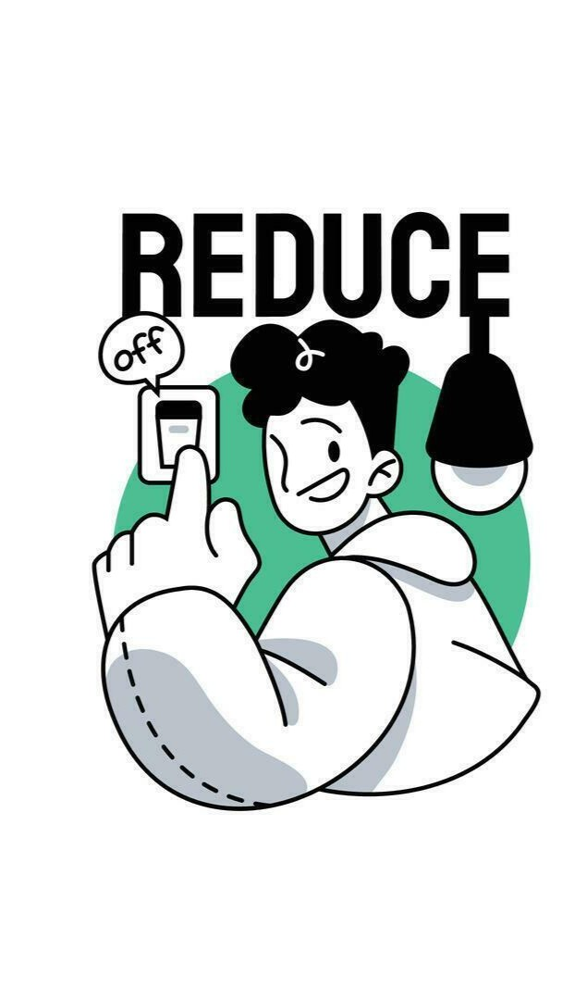
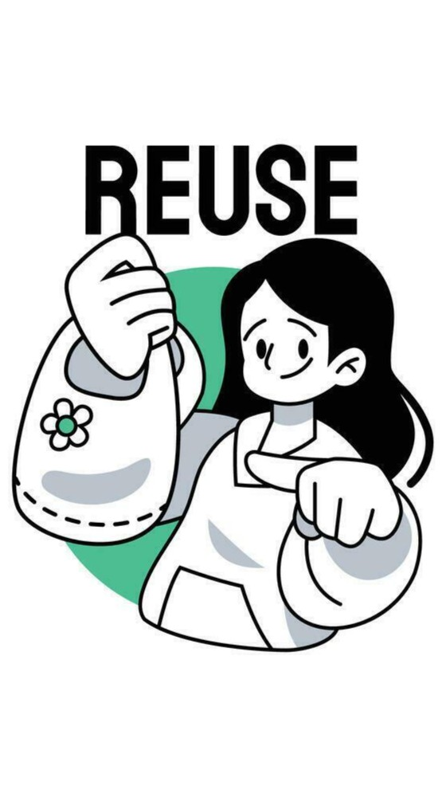
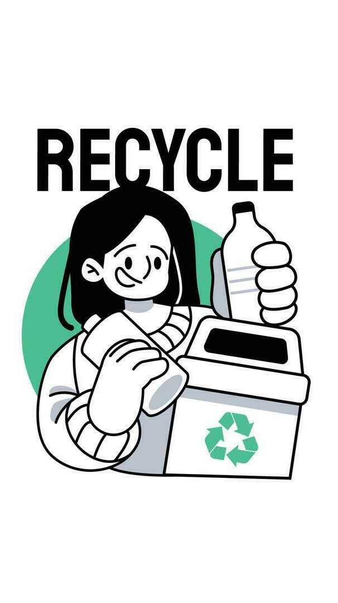

Reduce
You can reduce waste most effectively by choosing reusable products, cutting food waste through meal planning and composting, and avoiding single-use plastics, as recommended by sources like One Tree Planted, WWF, and The Environmental Blog.

Reuse
Common ways to reuse waste include recycling materials like paper and plastic, composting organic scraps, upcycling items into new products, repairing broken goods, and donating usable items to extend their lifespan. These methods reduce landfill use, conserve resources, and support a circular economy.

Recycle
To recycle waste effectively, sort items into the correct bins, use local recycling guides such as Recycle Right’s A–Z lists, and drop off special items like e‑waste at designated facilities listed by Planet Ark and government programs.
